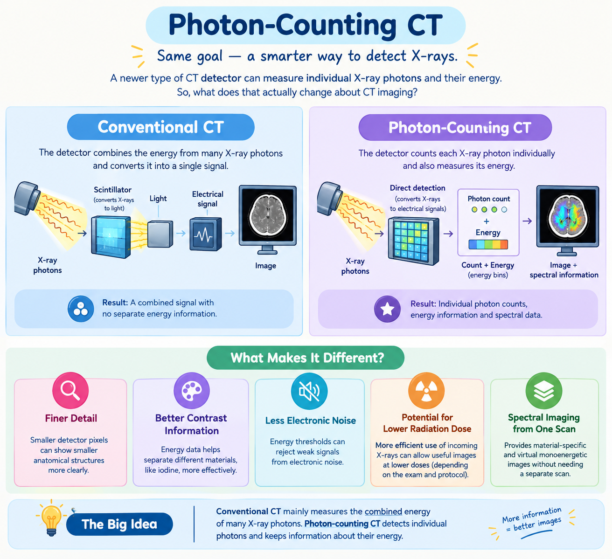

CT scanners have changed a lot over the years. One of the newer developments is photon-counting CT (PCCT).
The name may sound complicated, but the basic idea is quite simple:
So, what does that actually change about CT imaging?
First: How is it different from conventional CT?
In conventional CT, the detector receives X-rays and converts them into light before producing an electrical signal. The energies of many X-ray photons are combined to create the image.
Photon-counting CT works differently. Its detector can directly convert incoming X-ray photons into electrical signals and count them individually.
This means the detector can keep useful information about the energy of the X-ray photons, rather than combining everything into one signal.

A simplified comparison of conventional CT and photon-counting CT detector technology.
A simple comparison
| Conventional CT | Photon-Counting CT |
|---|---|
| Combines the energy from many X-ray photons | Counts individual X-ray photons |
| X-rays are first converted into light | X-rays are directly converted into electrical signals |
| Individual photon-energy information is largely lost | Photon-energy information can be separated into energy ranges |
| Uses larger detector elements in typical systems | Can use much smaller detector pixels |
This difference in detector technology is the main reason photon-counting CT can provide new possibilities in CT imaging.
So, what actually improves?
🔍 1. Finer anatomical detail
One important advantage of photon-counting CT is its ability to produce higher spatial resolution.
In simple words, spatial resolution describes how well a CT system can show small structures separately.
Photon-counting detectors can use very small detector pixels. This can help show fine anatomical details that may be difficult to see clearly with conventional CT.
This can be especially useful when looking at structures such as small vessels, lung details, bones, and other fine anatomy.
Smaller pixels → finer details → more detailed CT images.
2. More information about different materials
This is one of the most interesting features of photon-counting CT.
X-ray photons can have different energy levels. Photon-counting detectors can sort detected photons into different energy ranges, often called energy bins.
Why does that matter?
Different materials interact with X-rays differently depending on their energy. By keeping this energy information, photon-counting CT can help distinguish between materials more effectively.
For example, it can provide useful information about iodine-based contrast material.
This allows the scanner to create different types of spectral or multi-energy images from the same CT examination.
Conventional CT mainly asks, "How much X-ray signal reached the detector?"
Photon-counting CT can also ask, "How many photons arrived, and what were their energy ranges?"
3. Less electronic noise
All imaging systems have some amount of unwanted electronic noise.
Photon-counting detectors use an energy threshold, which can help reject very small signals that are related to electronic noise rather than useful X-ray photons.
As a result, photon-counting CT can achieve very low electronic noise, which can contribute to improved image quality, particularly when high spatial resolution is needed.
☢️ 4. Potential for lower radiation dose
Radiation dose is always an important consideration in CT.
Photon-counting detectors can use the incoming X-ray photons more efficiently. This creates the potential to obtain useful diagnostic images with less radiation, depending on the examination and scanning protocol.
5. Spectral CT information from the same scan
Because photon-counting detectors can separate photons according to their energy, they can provide spectral information during CT acquisition.
This can allow the creation of different types of images from the same dataset, including material-specific images and virtual monoenergetic images.
One CT acquisition can provide more than just a conventional anatomical image. It can also provide information about the materials within the image.
Where can photon-counting CT be useful?
Photon-counting CT is being studied and increasingly used across several areas of medical imaging.
Cardiovascular Imaging
Higher spatial and contrast resolution can help with detailed assessment of vessels and cardiovascular structures.
🫁 Thoracic Imaging
Improved spatial resolution can help visualize fine lung and airway structures.
🦴 Musculoskeletal Imaging
Very small bone structures and fine anatomical details can benefit from higher spatial resolution.
🧠 Neurovascular Imaging
The technology is being investigated for detailed imaging of small vessels and other neurovascular structures.
👶 Pediatric Imaging
Dose efficiency is particularly important in children, so photon-counting CT is also being explored for pediatric applications.
These applications are still developing, and the advantages can vary depending on the clinical question and scanning protocol.
Is photon-counting CT perfect?
No.
Photon-counting CT is a major development in CT technology, but it also has technical challenges.
For example, very high numbers of photons arriving at the detector at the same time can make accurate counting more difficult. Other detector effects can also affect energy measurement and image quality.
Researchers are continuing to improve detector materials, electronics, image reconstruction, and scanning protocols.
"Photon-counting CT gives CT scanners new ways to collect and use X-ray information."
Its benefits depend on the patient, the clinical question, and the imaging protocol.
What should you remember?
Conventional CT mainly measures the combined energy of many X-ray photons.
Photon-counting CT detects individual photons and keeps information about their energy.
And that is what makes photon-counting CT different.
Sources
- Schwartz FR, et al. Photon-Counting CT: Technology, Current and Potential Future Clinical Applications, and Overview of Approved Systems and Those in Various Stages of Research and Development. Radiology. 2025;314(3).
- Fletcher JG, et al. Photon-Counting CT in Thoracic Imaging: Early Clinical Evidence and Incorporation Into Clinical Practice. Radiology. 2024;310(3).
- Douek PC, et al. Clinical Applications of Photon-counting CT: A Review of Pioneer Studies and a Glimpse into the Future. Radiology. 2023;309(1).
- Nehra AK, et al. Seeing More with Less: Clinical Benefits of Photon-counting Detector CT. RadioGraphics. 2023;43(5).
- Toward Broader Clinical Adoption of Photon-Counting CT: Where We Stand According to High-Impact Literature. Radiology. 2026;319(1).